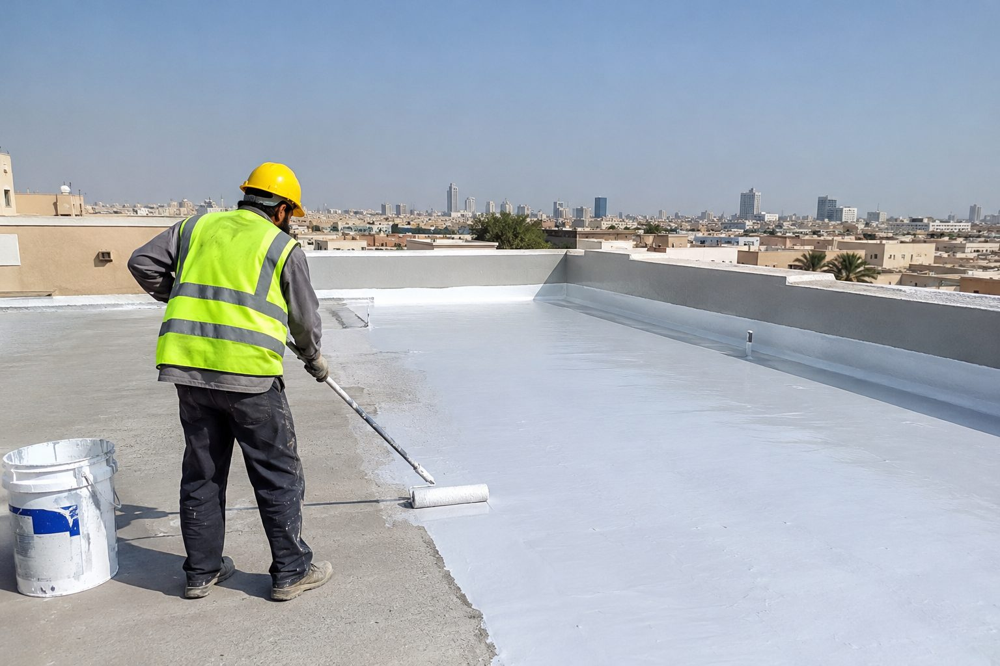
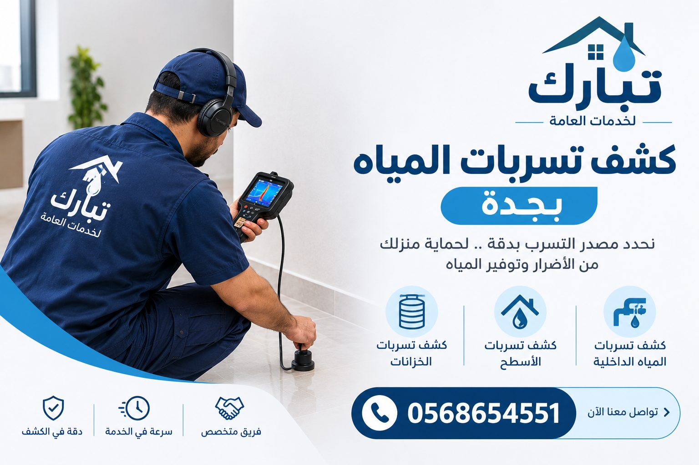
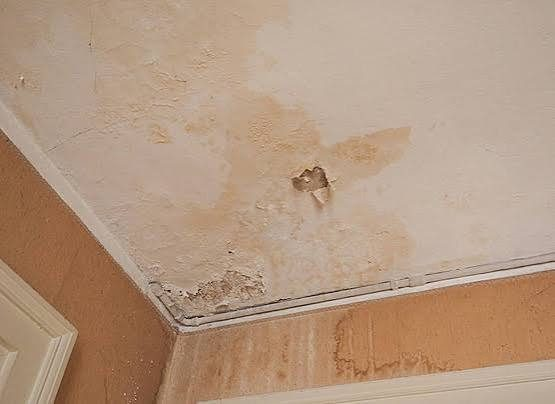

عزل الأسطح
حماية السطح من تسرب مياه الأمطار والرطوبة والحرارة بأنظمة عزل مناسبة لنوع السطح.
تفاصيل الخدمة ←نخدم مدينة جدة وما حولها. نحمي مبناك من الرطوبة والتسربات بحلول عزل احترافية، ونحدد مصدر التسرب بدقة لتقليل التكسير والتكلفة.
حلول متخصصة لمشكلات المياه والرطوبة في المباني.
حماية السطح من تسرب مياه الأمطار والرطوبة والحرارة بأنظمة عزل مناسبة لنوع السطح.
تفاصيل الخدمة ←عزل مائي وحراري للخزانات الأرضية والعلوية للحفاظ على سلامة المياه ومنع التسرب.
تفاصيل الخدمة ←تحديد مكان تسرب المياه بدقة قبل المعالجة لتقليل التكسير والتكلفة.
تفاصيل الخدمة ←في تبارك نتعامل مع مشكلات المياه والرطوبة التي تواجه المباني في جدة: تسرب الأسطح بعد الأمطار، وخزانات تفقد المياه، ورطوبة في الجدران والأسقف لا يُعرف مصدرها. نبدأ بمعاينة الحالة، ثم نحدد السبب، ونقترح الحل الأنسب سواء كان عزلاً مائياً أو حرارياً أو معالجة موضعية، بما يناسب المبنى والميزانية.
نفحص الحالة أولاً ونشرح لك الحل بوضوح قبل البدء.
نختار نظام العزل حسب نوع السطح أو الخزان وليس حلاً واحداً للجميع.
نحدد مصدر التسرب بأساليب فحص مناسبة لتقليل التكسير.
عمل منظم ونظافة في الموقع والتزام بما اتفقنا عليه.
أربع خطوات واضحة من الاتصال إلى التسليم.
تواصل معنا واشرح المشكلة أو الخدمة المطلوبة.
نزور الموقع ونحدد السبب ونقترح الحل.
نبدأ العمل بالمواد والطريقة المتفق عليها.
نتأكد من النتيجة ونسلّمك العمل جاهزاً.
نخدم مدينة جدة وأحياءها، ومنها:
لست متأكداً أن منطقتك ضمن نطاق الخدمة؟ اتصل بنا وسنؤكد لك فوراً.
نصائح مفيدة حول العزل وكشف التسربات.

تعرّف على أهمية عزل الأسطح في حماية المباني من تسرب المياه والحرارة والرطوبة، واكتشف أفضل مواد العزل وكيفية اختيار النظام المناسب لسطح منزلك.
اقرأ المزيد ←
تعرّف على أسباب تسربات المياه في جدة، وأبرز علامات التسربات الخفية، وطرق الكشف كشف تسربات المياه بجدة دون الحاجة إلى الهدم، بالإضافة إلى أفضل النصائح لحماية منزلك من الرطوبة وهدر المياه.
اقرأ المزيد ←
حل مشكلة الرطوبة بجدة: من تشخيص تسرب الهواء والهواء المالح إلى العزل الخارجي والمواد المقاومة. دليل شامل للسكان والمهندسين.
اقرأ المزيد ←نعم، نخدم جدة وما حولها. اتصل بنا لتأكيد موقعك وترتيب المعاينة.
نقدم عزل الأسطح (مائي وحراري)، وعزل الخزانات الأرضية والعلوية، وكشف تسربات المياه ومعالجتها.
اتصل بنا على 056 865 4551 وسنحدد معك موعد المعاينة وتفاصيل الحالة.
نعم، لأن اختيار نظام العزل يعتمد على حالة السطح أو الخزان ومصدر المشكلة.
بالتأكيد، نشرح لك الخيارات المتاحة والفروق بينها لتتخذ قرارك بوضوح.
اتصل بنا الآن لترتيب معاينة وتحديد الحل المناسب.
056 865 4551